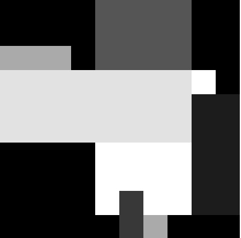
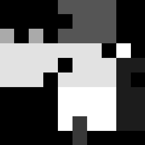

VisualAlgo::Stimulus Namespace Documentation
The VisualAlgo::Stimulus namespace provides functions to create stimuli in the form of 2D matrices and add noise to them.
Include
#include "helpers/Stimulus.hpp"
#include "helpers/Matrix.hpp"
Functions
Matrix random_mondrian(int rows, int cols, int num_rectangles);
The type of stimuli were used in Edwin Land's research on illuminant discounting and filling-in (1977 and 1983). Land named it McCann Mondrians, a tribute to his research partner, John McCann, and the Dutch artist Piet Mondrian (Grossberg, 2021).
Creates a new Matrix object with the given number of rows and cols, and draws a specified number of random overlapping rectangles in it.
Each rectangle has a random position and size, and a random value in the range [0, 1]. The size of the rectangle scales with rows and cols.
Returns the new Matrix.
VisualAlgo::Stimulus::Matrix matrix = random_mondrian(10, 10, 10);

void add_noise(Matrix &matrix, float noise_probability);
Randomly changes some percentage of pixels in the given matrix to any value in the range [0, 1].
noise_probability is the fraction of pixels that will be changed. It must be a value between 0 and 1.
VisualAlgo::Stimulus::Matrix matrix = random_mondrian(10, 10, 10);
add_noise(matrix, 0.1);
This creates a 10x10 matrix with 10 randomly placed squares, and then adds noise to 10% of the pixels.
